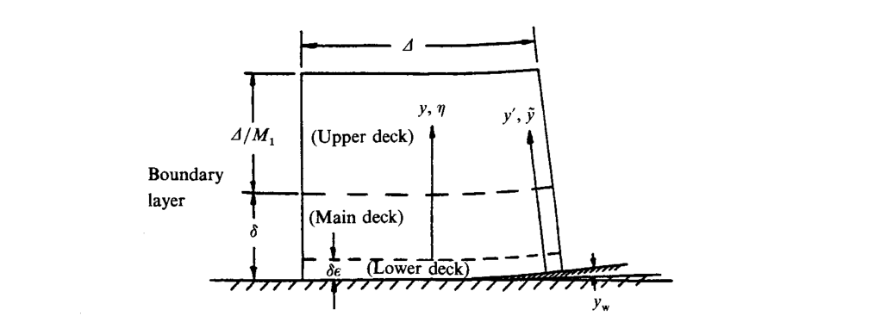
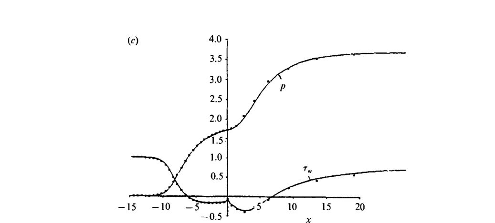
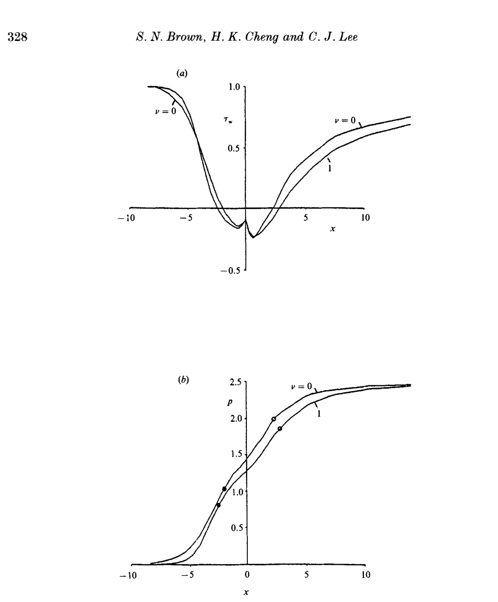
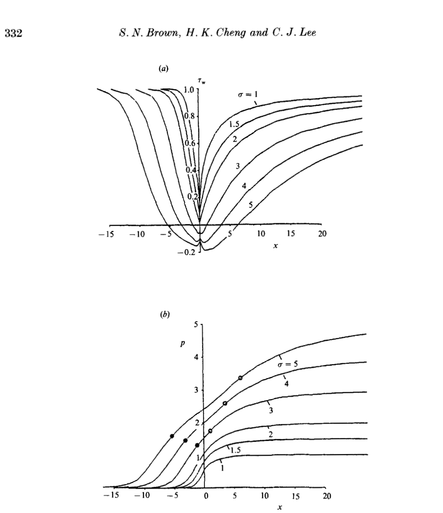

01中文摘要
在高超声速流动中按三层结构尺度研究无粘-粘性相互作用，以刻画壁温对层流分离附近流动结构的影响。识别出特征壁温T_c：低于该值时，压力-位移关系与三层尺度偏离经典Stewartson-Messiter-Neiland形式并发生更大变化。下层问题分为超临界（T_w≫T_c）、跨临界（T_w=O(T_c)）和亚临界（T_w≪T_c）三个区间。文中用有限差分、Newton线性化和大带宽矩阵迭代求解压缩自由干扰与尖拐角斜坡解。比较表明，单纯降低壁温不能有效消除或延迟分离，但能大幅减小三层结构的尺度，从而显著削弱上游影响。
02阅读说明
文章类型：理论（高超声速三重层渐近分析）与数值计算结合，JFM 220 (1990) 309–337，共29页。材料为bundle全文（含6幅抓图清单）；正文公式在文本层大量丢失，已用PDF第10–11、14–15页核对(2.38)–(2.52)与(2.59)–(2.72)的关键式。图表可读，信息完整度高。提取口径：只依据全文与图注，不引入外部文献结论；页码为期刊页码（PDF页序=期刊页−308）。 文章类型：期刊
03一句话核心与三句话摘要
高超声速强壁冷边界层三重层理论：识别临界壁温，划分超/跨/亚临界三区并数值求解分离。
- 经典三重层理论对应壁温比s_w→∞，Brown et al.(1975)的Newtonian版本又要求γ→1；强壁冷下压力-位移关系与相对尺度如何改变尚不清楚（p.309–311）。 原文明确
- 作者用Dorodnitsyn变量做三重层展开，导出特征壁温s_w^*（2.64）与超/跨/亚临界三区，得到与Newtonian理论相同的降阶方程组，并用二阶中心差分、Newton线性化与大带宽矩阵求解器计算自由干扰和尖锐斜坡（p.318–325）。 AI概括
- 降低壁温不能有效消除或推迟压缩斜坡上的分离，但会大幅缩小三重层尺度和上游影响范围；Re=10^8的IBL结果与三重层解接近，Re=10^6的差异部分来自跨临界壁温效应（p.309, p.333）。 原文明确
04核心内容清单
| 要点 | 类型 | 重要性 | 原文依据 | 属性 |
|---|---|---|---|---|
| 识别出由χ0决定的特征壁温s_w^*（2.64），并据此划分超临界s_w≫s_w^*、跨临界s_w=O(s_w^*)、亚临界s_w≪s_w^*三区。 | 理论判据 | A | p.322, §2.5, (2.64) | 原文明确 |
| 跨/亚临界的压力-位移关系改变：超临界为P1=−d(Δ+νP1)/dξ，亚临界为非退化形式d(P1+Δ)/dξ=−σ^{-1}P1，根本不同于经典P1=−dΔ/dξ。 | 核心公式 | A | p.322–323, (2.70)–(2.72) | 原文明确 |
| 在适当参数域内，降阶后的下层方程组与Brown et al.(1975)的Newtonian三重层完全相同，但本文不要求γ→1，而要求χ≪1。 | 理论等价性 | A | p.323–324, §2.5末 | 原文明确 |
| 自由干扰标定：σ=1,ν=0时分离过压1.0261（文献1.0260），平台压力1.809（文献约1.80）。 | 数值验证 | A | p.325, §3.2 | 原文明确 |
| 跨临界自由干扰：ν=σ=1时分离过压0.811（Brown et al.为0.810），平台1.681；ν=1,σ=2时分离过压0.581（文献0.588），平台1.564。 | 定量结果 | A | p.325–326, §3.2 | 原文明确 |
| σ增大（壁温降低）时，归一化变量下的平台压力升高：σ=1,2,10对应1.681、2.340、4.960；σ=50仍远离∞极限。 | 参数影响 | B | p.326, 图3 | 原文明确 |
| 斜坡α=2.5时，σ由1增至1.5使归一化分离涡尺寸与平台压力增大；但物理尺度和压力幅值随s_w降低而减小。 | 参数影响 | A | p.330–331, 图5–图7 | 原文明确 |
| 降低壁温不能有效消除或推迟压缩斜坡上的分离与再附，但会大幅减小三重层尺度Δ与上游影响。 | 主结论 | A | p.309摘要, p.334–336 | 原文明确 |
| 粗网格(30×15)/(40×15)与细网格(60×30)/(80×30)结果吻合，并能再现尖角处壁面剪切奇异（3.7）–（3.8）。 | 网格无关性 | B | p.327–330, 图4 | 原文明确 |
| σ>1.5且α=2.5时迭代收敛困难，作者认为主要是反流区处理不足；较小斜坡角下可算到σ=5（α=1）与σ=10（α=0.5）。 | 方法局限 | B | p.331, §3.3 | 原文明确 |
| IBL解在Re=10^8接近三重层解；Re=10^6的偏差可部分由ν=0.66（相对Re=10^8的0.37）解释，其余归因于弱全局干扰等二阶效应。 | 对比验证 | B | p.332–333, 图12 | 原文明确 |
| 干扰对壁面热流率的影响显著，但作者称可单独处理，本文未展开。 | 范围说明 | C | p.312, §1末 | 原文明确 |
05引言：研究问题与领域缺口
研究问题：高超声速层流边界层在强壁冷条件下的粘性-无粘干扰，能否仍用三重层描述，壁温如何改变下层压力-位移关系与相对尺度。领域缺口：经典理论（Stewartson、Messiter、Neiland等）是s_w→∞极限；Brown et al.(1975)的Newtonian三重层虽允许大χ，却要求γ→1；两者之间的壁温效应未被系统区分（p.309–311）。目标：在弱全局干扰χ→0下，保留一般γ与非线性黏温律μ∝T^ω，重新推导下层问题并做数值求解。核心假设：定常二维层流、M1≫1、χ≪1、s_w≪1、½<ω<1、Pr=O(1)、斜坡角足够小（p.312–315）。作者明确指出，识别特征壁温T_c^*（即s_w^*）及三个壁温区间是本文的新意（p.310）。
06流动条件与几何构型
| 项目 | 数值/描述 | 依据 | 备注 |
|---|---|---|---|
| 来流马赫数 | M1→∞（高超声速），并要求弱全局干扰χ→0 | p.310, §1；p.312, §2 | χ为(2.53)定义的高超声速干扰参数 |
| 全局压力尺度 | ε0=1/M1（在(2.59)之后取） | p.312, §2 | 此前保留一般ε0以便推广 |
| 气体模型 | 量热完全气体，比热比γ任意，不要求γ→1 | p.312, §2 | 与Brown et al.(1975)的关键差别 |
| Prandtl数 | O(1)；给出Pr=1时k的显式值 | p.312；p.322 | k=0.663+1.722s_w−(γ−1)(0.367−0.836s_w+0.412s_w²) |
| 黏温关系 | μ∝T^ω，½<ω<1 | (2.2),(2.4)，p.312 | 也讨论线性黏温模型选项(2.3) |
| 壁温 | 强壁冷，s_w为归一化壁温比；分超/跨/亚临界三区 | p.315, p.322, (2.64) | 具体T_w/T_0数值文中未提及 |
| 几何 | 二维定常层流平板/尖锐斜坡：y=0(x<0)，y=αx(x>0) | p.326, (3.4) | α为下层归一化斜坡角 |
| 计算斜坡角 | α=0.5、1、2.5 | p.327–330, 图4–图9 | α=1与2的另一些结果见Brown et al.(1989) |
| 物理斜坡角与α的关系 | 由(3.5)归一化，含a*、ε、s_w、γ、χ0 | p.326, (3.5) | 文本层符号残缺，具体系数受限于材料，无法确认 |
| Reynolds数 | 仅作为渐近参数出现，未给固定数值 | p.310, p.322 | 理论为Re→∞极限 |
| 计算域与边界条件 | 上游Δ→0、下游Δ→−y_w；远场用匹配渐近展开等效的微分关系实现 | p.319, (2.50)–(2.51)；p.325, (3.1)–(3.3) | 自由干扰用Lighthill型线性解作初值 |
| 网格 | (30×15)、(60×30)；(40×15)、(80×30) | p.327, 图4图注 | 自由干扰x向Δx=0.10，y向由Δy=0.02递增 |
| 反流处理 | FLARE模型（u<0处删除u∂u/∂x），仅用于自由干扰 | p.324–325, §3.1 | 斜坡问题未用FLARE |
07核心现象与关键参数
| 参数 | 定义 | 数值 | 关系/说明 | 依据 |
|---|---|---|---|---|
| s_w | 归一化壁温比（壁焓/驻点焓尺度，见§2.1定义） | 三区判据的相对量；具体数值文中未提及 | 与s_w^*比较划分超/跨/亚临界 | p.315, p.322 |
| s_w^* | 特征壁温水平，由χ0、k、γ、黏温参数决定 | s_w^*≡[(λ̄_μ)^{3γ−4}k^4¼(γ−1)^2χ0]^{1/(3ω+2)} | s_w≫s_w^*超临界；s_w=O(s_w^*)跨临界；s_w≪s_w^*亚临界 | p.322, (2.64) |
| χ0 | 高超声速干扰参数，由(2.53)定义，与黏性-温度关系及参考温度有关 | 文中未给具体数值；理论要求χ0≪1 | 进入s_w^*与σ | p.320, (2.53) |
| ν | 偏离经典三重层程度的参数，ν=kε_p/(εs_w) | 超临界ν=(s_w^*/s_w)^{ω+1/2}<1；跨/亚临界ν=1 | 控制(2.70)中压力项的相对权重 | p.322, (2.62),(2.69) |
| σ | 压力-位移律的标度因子，σ=γ^{1/2}¾(γ−1)εs_wχ0/(Δε_p) | 超临界取σ=1；亚临界σ=(s_w^*/s_w)^{4ω+2}>1 | 决定(2.72) | p.322, (2.61),(2.71) |
| ε | 三重层小参数，控制主层速度扰动与下层层厚 | 按(2.66)随s_w与ν变化；具体数值未给 | 下层厚度O(ε) | p.322, (2.66) |
| ε_p | 诱导压力的小参数 | 按(2.67)随s_w与ν变化；具体数值未给 | P1=O(ε_p) | p.322, (2.67) |
| Δ | 下层厚度/三重层流向尺度（位移量） | Δ=k^{-3}(λ̄_μ)^{-5}γ[¼(γ−1)]^3s_w^{4ω+2}ν^3 | 随s_w降低而急剧减小，控制上游影响 | p.322, (2.68) |
| k | 由主层温度与速度剖面积分确定的常数 | Pr=1,ω=1时k=0.663+1.722s_w−(γ−1)(0.367−0.836s_w+0.412s_w²) | 进入σ、ν、s_w^* | p.322, (2.63) |
| α | 下层归一化斜坡角 | 计算取0.5、1、2.5 | 随s_w降低按(3.5)变化 | p.326, (3.5) |
| P1平台值 | 自由干扰远下游过压平台 | σ=1,2,10对应1.681、2.340、4.960 | 随σ增大而升高 | p.326, 图3 |
08方法与数据
渐近分析：以Dorodnitsyn变量(2.5)–(2.8)把可压缩边界层写成近不可压形式(2.9)–(2.11)，用壁面热流与剪切行为(2.17)–(2.23)确定下层标度；主层按(2.25)–(2.35)展开，取内极限(2.36)–(2.37a)得下层层厚O(ε)；下层化为规范方程(2.43)–(2.45)，由(2.46)–(2.47)联系ε、ε_p、Δ；用主层位移厚度(2.52)、(2.56)–(2.58)与上层Prandtl-Glauert关系得P1-Δ关系(2.59)–(2.63)（p.313–322）。数值方法：原始变量、二阶中心差分；自由干扰用二阶隐式推进+LINPACK大带宽求解器，反流区用FLARE模型（u<0处删除u∂u/∂x），x方向Δx=0.10、y方向从Δy=0.02逐步增大（p.324–325）；斜坡问题用全场松弛、Newton线性化、大带宽直接解法，并引入尖角跳跃条件(3.6)与壁面剪切奇异(3.7)–(3.8)（p.326–329）。网格：自由干扰与算例使用(30×15)粗网格与(60×30)细网格，σ=1.5算例用(40×15)/(80×30)；残差约降至10^-?（OCR缺失），粗网格约7次迭代、细网格约15次（p.325, p.327）。验证：与Stewartson & Williams(1973)、Brown et al.(1975)、Rizzetta et al.(1978)、Werle & Vatsa(1974)的IBL结果比较（p.325–333）。
| 项目 | 内容 | 依据 | 备注 |
|---|---|---|---|
| 总体框架 | 高超声速边界层的三重层（下层-主层-上层）渐近展开，弱全局干扰χ→0 | p.310–312, §1–§2 | |
| 坐标变换 | Dorodnitsyn变量(2.5)–(2.8)，把可压缩边界层化为近不可压形式(2.9)–(2.11) | p.312–313 | |
| 主层处理 | 速度/焓/温度按(2.25)–(2.27)展开，得(2.28)–(2.35)及内极限(2.36)–(2.37a) | p.315–317 | |
| 下层方程 | 规范形式(2.43)–(2.45)，误差O(ε/s_w^{1/2})；温度方程与动量解耦 | p.318–319 | |
| 压力-位移关系 | 由主层位移厚度(2.52)、(2.56)–(2.58)与上层Prandtl-Glauert关系导出(2.59)–(2.63) | p.319–322 | |
| 自由干扰数值方法 | 二阶隐式推进+LINPACK大带宽求解器；反流区FLARE；Lighthill型线性解作初值 | p.324–325 | |
| 斜坡数值方法 | 全场松弛+Newton线性化+大带宽直接解；尖角处用跳跃条件(3.6)与∂p/∂x连续 | p.326–329 | |
| 网格与收敛 | (30×15)/(60×30)与(40×15)/(80×30)；粗网格约7次、细网格约15次迭代 | p.325, p.327 | |
| 上游/下游渐近条件 | 上游Lighthill(1953)型、下游Smith & Stewartson(1973)型展开，1+σk=1.2879k^{1/2} | p.325, (3.1)–(3.3) | |
| 验证对象 | Stewartson & Williams(1973)、Brown et al.(1975)、Rizzetta et al.(1978)、Jenson(1977)、Gajjar & Smith(1983)、Werle & Vatsa(1974) IBL | p.325–333 | |
| 尖角奇异检验 | 用(3.7)–(3.8)，C1=±0.78661τ_w(0)^{3/2}（未分离/分离）检验壁面剪切 | p.328–329, (3.7)–(3.8) | OCR对指数显示不清，按Jenson(1977)原式核对 |
09核心推导与公式
把强壁冷引入高超声速三重层：先用Dorodnitsyn变量建立全局边界层与近壁标度，再对主层做扰动展开，利用主层特殊温度剖面使位移厚度变化正比于s_w；由此压力扰动对位移的贡献在低壁温上升为首阶，导出修正的压力-位移律；最后通过与(2.46)、(2.47)、(2.61)、(2.62)的量纲匹配，用一个自由度为三重层定标，得到特征壁温s_w^*及三个壁温区。
关键假设
- 定常、二维、层流边界层，平板/小角度斜坡
- M1≫1且弱全局干扰χ→0（ε0=1/M1）
- 量热完全气体，γ为O(1)，不要求γ→1
- Prandtl数为O(1)
- 黏温律μ∝T^ω，½<ω<1
- 强壁冷s_w≪1；且ε≪s_w^{1/2}、ε_p≪s_w^{3/2}
- 上层用Prandtl-Glauert近似；离心力与ε²非线性压力修正为高阶
- 斜坡角足够小，壁面抬升不超过下层厚度
推导过程
用Dorodnitsyn变量(2.5)–(2.8)把可压缩边界层写成近不可压形式(2.9)–(2.11)；壁面热流与剪切由s_w和ω控制，近壁解行为由(2.17)–(2.23)给出，为下层标度提供依据。
在主层把速度、焓、温度按(2.25)–(2.27)展开：U=U0+εU1+ε_pU_p+…，压力P=P0+ε_pP1+…。代入Navier-Stokes得(2.28)–(2.35)；关键是由法向动量方程定出ε²，并使扰动温度剖面产生的位移厚度变化与s_w成正比（(2.29)的特殊形式）。
对(2.28)–(2.35)取η→0的内极限(2.36)–(2.37a)，确认下层厚度η1=O(ε)，并给出下层速度、温度尺度；同时要求ε≪s_w^{1/2}（(2.37b)），使主层近壁展开与下层匹配自洽。
取下层变量x̃=ξ、ỹ=(η−εỹ_w)/ε及(2.41)–(2.42)的因变量，把下层PDE化为规范形式(2.43)–(2.45)，误差O(ε/s_w^{1/2})；动量与连续性方程和温度方程解耦，温度剖面可在求得速度后计算。
(2.46)、(2.47)给出三个尺度因子ε、ε_p、Δ之间的两个关系；匹配条件为ỹ→∞时ũ→ỹ−Δ+ỹ_w、T̃1→ỹ−Δ+ỹ_w（(2.48)），壁面为无滑移无穿透(2.49)，远场Δ→0与Δ→−ỹ_w（(2.50)–(2.51)）。
在高超声速外缘条件下计算主层位移厚度δ*（(2.52)），并用可积化的不定积分I（(2.54)–(2.58)）说明主层位移厚度到O(εs_w)不受下层影响；再借上层Prandtl-Glauert关系(2.59)消去δ*，得到P1与Δ的封闭关系(2.60)–(2.63)。
联立(2.46)、(2.47)、(2.61)、(2.62)并把剩余自由度用于使展开良序，得到特征壁温(2.64)及ν、σ与尺度的关系(2.65)–(2.68)。当s_w≫s_w^*取σ=1，得ν=(s_w^*/s_w)^{ω+1/2}<1；当s_w=O(s_w^*)取ν=σ=1；当s_w≪s_w^*取ν=1，得σ=(s_w^*/s_w)^{4ω+2}>1。
超临界σ=1时(2.60)化为(2.70)，ν度量对经典理论的偏离；亚临界ν=1时(2.60)化为非退化的(2.72)，压力梯度项与位移项同阶，这是强壁冷最本质的改变。
适用边界：推导基于χ≪1、s_w≪1、ε≪s_w^{1/2}、ε_p≪s_w^{3/2}、½<ω<1与小斜坡角；离心力项与ε²非线性修正被降为高阶，但在更低壁温下可能升至首阶（p.311, p.323）；上层用Prandtl-Glauert近似；未给固定Re/M的定量映射。
10结果：主要发现与关键证据
（1）自由干扰(σ=1,ν=0)：分离处过压1.0261，对比Stewartson & Williams的1.0260；平台压力1.809，对比文献约1.80（p.325，§3.2）。（2）跨临界(ν=σ=1)：分离处P=0.811，对比Brown et al.的0.810；本文首次给出平台1.681；ν=1,σ=2时分离处0.581，对比0.588，平台1.564（p.325–326）。（3）图3给出σ=1,2,10,50,∞的过压曲线，分离处过压依次0.811、1.088、2.018、3.234、4.712，平台压力1.681、2.340、4.960（σ=1,2,10）；σ=50仍远离∞极限（p.326，图3）。（4）斜坡α=2.5：粗/细网格结果吻合且能再现拐角奇异（p.327–330，图4）；σ由1增至1.5时，归一化分离涡尺寸与平台压力增大（p.330–331，图5、图6）。（5）亚临界算例：α=1时σ可达5，α=0.5时σ可达10；图9显示σ=1,1.5,2,3,4,5的壁面剪切与压力（p.330–332，图7、图9）。（6）σ>1.5且α=2.5时收敛困难，作者归因于反流区处理不足（p.331）。（7）IBL对比：Werle & Vatsa在Re=10^8的解与三重层解接近；本文估计ν=0.37(Re=10^8)、0.66(Re=10^6)，Re=10^6的偏差部分来自跨临界效应（p.332–333，图12）。（8）尺度：降低s_w使三重层的Δ与上游影响大幅减小；经典理论高估Δ的幅度（p.335）。
| 发现 | 证据 | 证据类型 | 强度 | 位置 | 属性 |
|---|---|---|---|---|---|
| 存在由χ0决定的特征壁温s_w^*，并据此划分超/跨/亚临界三个壁温区；这是本文的核心理论结果。 | (2.64)及§2.5的定标关系(2.65)–(2.72) | 理论推导 | 强 | p.322–323 | 原文明确 |
| 跨/亚临界下压力-位移关系偏离经典P1=−dΔ/dξ，亚临界呈d(P1+Δ)/dξ=−σ^{-1}P1的非退化形式。 | (2.70)、(2.72) | 理论结果 | 强 | p.322–323 | 原文明确 |
| 经典极限的数值标定高度一致：分离过压1.0261对1.0260，平台压力1.809对约1.80。 | σ=1,ν=0自由干扰计算 | 数值验证 | 强 | p.325, §3.2 | 原文明确 |
| 跨临界自由干扰的分离过压与平台压力低于经典值：ν=σ=1时0.811与1.681；ν=1,σ=2时0.581与1.564。 | 图3及§3.2数值 | 定量对比 | 中 | p.325–326, 图3 | 原文明确 |
| 归一化平台压力随σ（即壁温降低）显著升高：σ=1,2,10对应1.681、2.340、4.960。 | 图3自由干扰过压曲线 | 参数研究 | 中 | p.326, 图3 | 原文明确 |
| 斜坡α=2.5时，σ从1增至1.5使归一化分离涡和平台压力增大；但物理尺度随壁温降低而减小。 | 图5、图6、图7、图9的壁面剪切与压力分布 | 数值实验 | 中 | p.330–332 | 原文明确 |
| 降低壁温不能有效消除或推迟压缩斜坡上的分离；但会大幅减小三层尺度Δ，从而显著削弱上游影响。 | α减半时σ增为4倍（8、12）仍落在α=0.5时5–10的分离区间；以及(2.66)–(2.68)的标度 | 参数外推+计算 | 中 | p.334–335, §3.5 | 原文明确 |
| IBL解在Re=10^8接近三重层解；Re=10^6的差异可部分归因于跨临界效应（ν=0.66）。 | 图12与Werle & Vatsa(1974)三个Re的对比 | 交叉验证 | 中 | p.332–333, 图12 | 原文明确 |
11机制解释与论证链
【原文明确】主层扰动温度剖面(2.29)具有特殊形式，使主层位移厚度的变化直接正比于s_w；壁温越低，同样的压力扰动对位移厚度的贡献越大，dP1/dξ因此进入首阶，导致(2.70)、(2.72)相对经典律的改变。物理解释上，强壁冷使下层极薄、温度与密度在下层近似均匀，下层方程呈不可压形式；但压力变化通过主层位移厚度被放大，从而显著改变分离区的整体标度。【AI概括】计算中σ增大（壁温降低）时归一化分离涡和平台压力反而增大，是因为归一化尺度随s_w收缩；换算到物理尺度，三重层长度、分离泡尺寸与压力幅值都随壁温降低而减小，上游影响随之减弱。
12讨论：结论、贡献与局限
机制：主层扰动温度剖面具有特殊形式，使主层位移厚度的变化与壁温比s_w成正比；壁温越低，压力扰动对位移厚度的相对贡献越大，dP1/dξ进入首阶，从而把经典律P1=−dΔ/dξ改为(2.70)/(2.72)（p.323–324）。这与Brown et al.(1975)用大χ放大压力效应在数学上等价，可视为“以小χ换小(γ−1)”的重新定标（p.324）。工程含义：冷却壁不能靠降温消除压缩斜坡分离，但可显著缩短干扰区、削弱上游影响；这对高超声速壁面热防护与干扰区长度估计有意义（p.335–336；工程外推为AI推断）。局限：纯渐近理论，未给固定Re/M算例；大σ、大斜坡角收敛差；FLARE反流模型近似；离心力项与ε²非线性压力修正被列为高阶，但更低壁温时可能升至首阶，留待另文（p.311, p.323, p.331）；非定常三重层与边界层稳定性未研究（p.336）。未解决问题：Neiland(1989)跨临界理论与本文三区的对应关系尚未调和（p.311, p.336）。
作者结论
作者结论：高超声速强壁冷边界层的粘性-无粘干扰仍可用三重层描述，但必须引入特征壁温s_w^*并区分超/跨/亚临界三区；跨/亚临界下压力-位移关系改变，降阶方程与Brown et al.(1975)的Newtonian系统相同而不要求γ→1；数值解在经典极限与文献一致，并表明降低壁温不能有效消除/推迟压缩斜坡分离，却能大幅缩短三重层尺度、减小上游影响；Re=10^8的IBL结果与三重层解接近。
主要贡献
- 识别特征壁温s_w^*（2.64），建立超/跨/亚临界三区分类。
- 导出跨/亚临界修正的压力-位移关系(2.70)、(2.72)，并证明降阶系统与Newtonian三重层等价。
- 给出含非线性黏温律μ∝T^ω、一般γ的三重层完整定标(2.65)–(2.68)。
- 实现自由干扰与尖锐斜坡的隐式数值解，含尖角跳跃条件与网格收敛验证。
- 澄清“降壁温是否可消除分离”的问题：不能消除，但可大幅减小上游影响。
- 用跨临界效应部分解释三重层与IBL在Re=10^6的差异。
局限与未解决问题
作者承认：σ>1.5且α=2.5时松弛迭代收敛困难，反流区处理不足；需要改进FLARE型或其他差分/迭代策略以扩大σ和α范围（p.331）。离心力与ε²非线性压力修正被列为高阶，更低壁温时可能升至首阶，留待另文（p.311, p.323）。与Neiland(1989)跨临界理论的对应尚未调和（p.311, p.336）。非定常三重层及对高超声速边界层稳定性的影响未研究（p.336）。AI识别：全文无固定Re/M的算例，s_w^*与具体风洞条件的映射需读者自行代入；图3仅给到σ=50，∞极限靠Gajjar & Smith(1983)对照；热流率仅提及“可单独处理”而未给出结果。
13对高速流动与工程的意义
对高速流动的意义：本文给出壁温对三重层干扰区尺度与上游影响的显式定标，可用于判断强冷壁层流干扰区（如高超声速前缘、压缩拐角）的长度量级，并提示“冷却壁不能消除分离、但能限制干扰前传”这一工程直觉需要修正（p.334–336）。可借鉴之处：用Dorodnitsyn变量统一主层/下层匹配、以s_w定标三重层、用跳跃条件处理尖角，以及用ν、σ两个参数把不同壁温统一到同一降阶系统。不能回答：具体Re/M下的 dimensional 分离长度、湍流/转捩效应、非定常分离与稳定性。对进气道/隔离器激波-边界层干扰的启示属于【AI推断】：冷壁会缩短本征干扰长度，但不改变分离是否发生的判据，设计时不能仅靠壁面冷却控制分离。
14核心图件




15可引用原文素材
| 原文短句 | 可支持的观点 | 位置 | 使用建议 |
|---|---|---|---|
| “A critical wall-temperature range O(Tc) is identified” | 特征壁温与三区分类是核心贡献 | p.309, 摘要 | 引言中概括本文定位 |
| “the pressure-displacement relation ... departs from that of the classical formulation” | 跨/亚临界压力-位移律改变 | p.309, 摘要 | 理论贡献引用 |
| “the present program gives 1.0261 as compared to 1.0260” | 经典极限数值标定一致 | p.325, §3.2 | 方法可靠性佐证 |
| “The plateau value of P reached by the present program in this case is 1.809” | 自由干扰平台压力与文献约1.80相符 | p.325, §3.2 | 定量对比 |
| “cannot be effectively eliminated/delayed by lowering the wall temperature” | 降壁温不能消除分离 | p.309, 摘要 | 结论引用 |
| “lowering Tw drastically reduces the triple-deck dimension” | 降壁温缩短干扰区与上游影响 | p.309, 摘要 | 工程含义引用 |
| “classical theory overPredicts the extent of A” | 经典理论高估三重层流向尺度 | p.335, §3.5 | 讨论定标差异 |
| “the separation appears to occur for σ between 5 and 10” | 亚临界α=1时的分离阈值 | p.335, §3.5 | 定量结果引用 |
16最终核验
| 核验项 | 结论 |
|---|---|
| 仅基于全文 | 是。仅用bundle全文、图注与6页PDF核对公式；未引用外部文献结论，文献名仅作为原文比较对象出现。 |
| A 级要点有依据 | 是。A级要点均有页码与式号：(2.64)、(2.70)–(2.72)见p.322–323；1.0261/1.0260与1.809见p.325；分离不可消除见p.309、p.335。 |
| 属性标注 | 是。所有要点、三句摘要、发现均标【原文明确】/【AI概括】/【AI推断】；工程外推已明确标为AI推断。 |
| 覆盖范围 | 覆盖IMRaD四节及13项要素；bundle共1293行已全文读完；公式核对PDF第10–11、14–15页共4页（未超6页）。 |
| 无编造 | 未编造页码、图号、公式或数据；文本层缺失的(2.9)–(2.23)、(2.25)–(2.37)仅作文字概括；α物理角关系(3.5)符号受限于材料，已注明无法完全确认。 |
需回原文确认
- s_w^*（2.64）中的λ̄_μ与(2.53)的χ0如何由具体M1、Re、T_w换算？原文未给算例。
- 图3中σ=∞曲线与Gajjar & Smith(1983)的定量差异有多大？文中仅称“closely”。
- α=0.5、1时σ的收敛上限（10、5）之外的解是否改变“分离不可消除”的结论？
- (3.5)的归一化斜坡角完整系数在OCR中缺失，需回PDF第18页核对。
- 跨临界范围s_w=O(s_w^*)的上下边界如何与Neiland(1989)的三个域对应？作者称“not very apparent”。
- 热流率“可单独处理”的具体结果是否在Brown et al.(1989)报告中？本文未给。
- 非定常三重层下壁温效应是否同样临界的推测（p.336）尚无计算支持。
17关联文献
依据标签、板块、构型与作者脉络自动关联，可据此追踪同一问题的前序与后续工作。
18引用格式
选择期刊风格后复制；出处保留原刊名。BibTeX 可直接用于 LaTeX。
引用格式
Brown, S. N., Cheng, H. K. & Lee, C. J. 1990 Inviscid–viscous interaction on triple-deck scales in a hypersonic flow with strong wall cooling. Journal of Fluid Mechanics. https://doi.org/10.1017/s0022112090003275
PDF上传 PDF 并更新本页
本页缺少全文、摘要或图件时，可在浏览器本地补入 PDF。解析完全在本机完成，不上传网络；完成后会更新本页的 PDF 打开链接、原摘要、IMRaD 机器抽取、关键句与含图页面。复杂的公式语义与中文深度解读仍以原文和既有精读记录为准。
Zotero 笔记摘录
单纯降低壁温不能有效消除/延迟压缩斜坡分离 ，只是大幅减小上游影响和分离尺度 Ma、Re 通过 χ0 进入；壁温比是关键